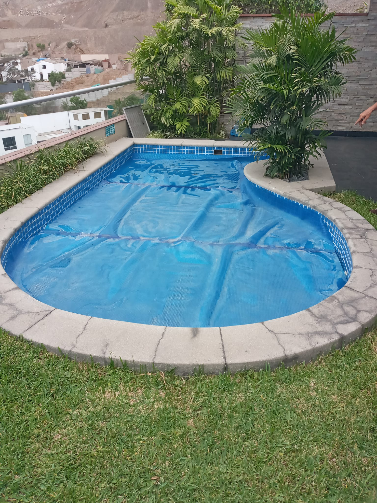
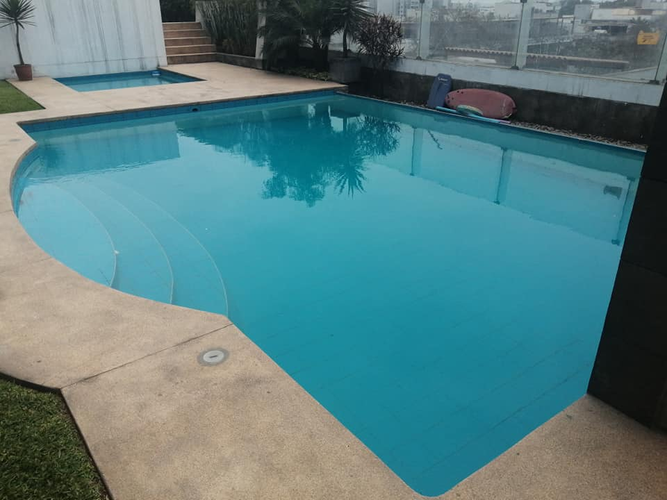
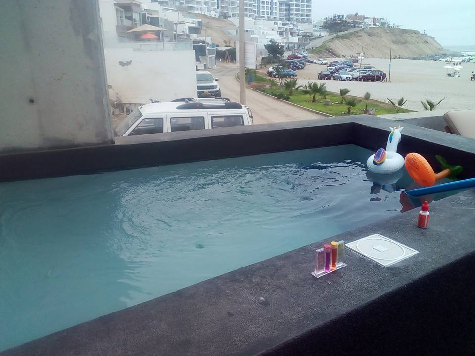

G&HIDROSISTEMAS
¡Bienvenido a mi página! Aquí, aprenderás más Hidrosistemas.
G&Hidrosistemas es una empresa que se dedica a :Construccion, Equipamiento, Remodelacion, Instalacion, Puesta en Marcha y Mantenimiento de Piscinas
PROYECTOS DE SERVICIOS REALIZADOS - 2023
Piscina en La Molina
PISCINA ASIMETRICA
La bomba de la piscina tiene un motor que gira a una velocidad alta. En el otro extremo hay una turbina (impulsor) que está activada por el motor de la bomba. La carcasa, también conocida como la cámara de vacío, se llena de agua, creando un vacío y permitiendo circular el agua de la piscina.
Piscinas en Casuarinas
PISCINA ASIMETRICA
La bomba de la piscina tiene un motor que gira a una velocidad alta. En el otro extremo hay una turbina (impulsor) que está activada por el motor de la bomba. La carcasa, también conocida como la cámara de vacío, se llena de agua, creando un vacío y permitiendo circular el agua de la piscina
Piscinas en Lurin
PISCINA ASIMETRICA
La bomba de la piscina tiene un motor que gira a una velocidad alta. En el otro extremo hay una turbina (impulsor) que está activada por el motor de la bomba. La carcasa, también conocida como la cámara de vacío, se llena de agua, creando un vacío y permitiendo circular el agua de la piscina